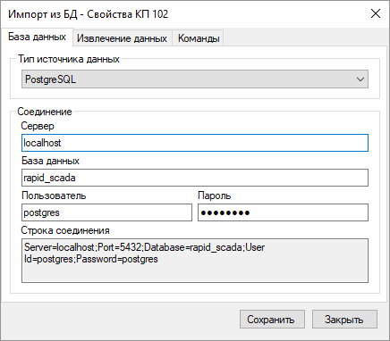
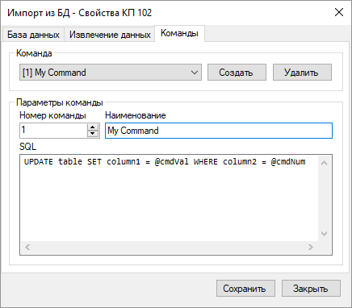

Драйвер импорта из БД позволяет получать текущие данные из сторонней базы данных, а также записывать информацию в стороннюю БД с помощью команд телеуправления. Данный драйвер входит в дистрибутив Rapid SCADA и отдельная установка драйвера не требуется. Файл библиотеки драйвера - KpDbImport.dll.
Каждый КП, использующий драйвер импорта из БД, содержит один запрос на получение данных и набор команд телеуправления (ТУ) на изменение данных. На одной линии связи может находится один или несколько КП, импортирующих данные.
Настройка драйвера импорта из БД выполняется с помощью формы свойств КП. Чтобы открыть эту форму, необходимо найти соответствующий КП в настройках Коммуникатора, щёлкнуть на узле КП правой кнопкой мыши и выбрать пункт меню Свойства.

На странице База данных необходимо задать тип базы данных и указать параметры соеднинения с БД. Если требуется ввести нестандартные параметры соединения, то допускается редактирование строки соединения напрямую.
На странице Извлечение данных указывается SQL-запрос для получения текущих данных из БД. Драйвер автоматически создаёт теги КП на основе списка запрашиваемых столбцов таблицы. Если запрос имеет сложный синтаксис, то может потребоваться указать количество тегов вручную.

На странице Команды задаются команды ТУ, поддерживаемые данным КП. Команды обеспечивают передачу информации из Rapid SCADA в базу данных. В SQL-запросе команды доступны переменные cmdVal и cmdNum, которые содержат значение и номер команды соответственно. Для большинства СУБД переменные в запросе имеют префикс @, для Oracle обычно используется префикс : (двоеточие).
Допускается создание команды с номером 0, которая будет выполняться по умолчанию. Если номер отправленной команды не найден в списке команд КП, то будет выполнена команда по умолчанию.